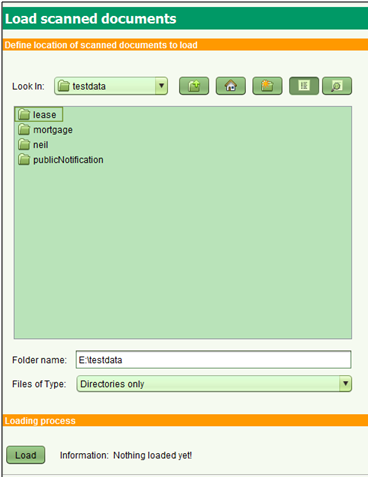

Chargement Massif de Documents Scannés
Cette fonction permet le chargement de documents scannés existants (ex: documents
provenant de l'enregistrement sporadique) dans les archives numérique de SOLA et
donc fourni un accès facile à ces documents par l'équipe d'enregistrement systématique.
Charger des collections de Document Scannés
Cette étape doit théoriquement intervenir au commencement d'un enregistrement systématique.
Les images de documents scannés devront être chargées dans la station de travail pour procédé au
téléchargement ou alors un dossier du serveur devra être rendu accessible à l'utilisateur SOLA user.
Chaque collection doit être localisée dans un dossier qui correspond à un type de document
(table source.administrative_source_type dans la base de données SOLA)

Etapes
Dans cette partie de l'écran, le type de destination est définie. En ce moment, il y en a deux:
- Faire fonctionner le logiciel SOLA Opérations Massives
- Depuis l'Accueil, sélectionner l'outil "Charger Documents Scannés" pour ouvrir l'écran
Charger Documents Scannés
- Identifier le dossier dans lequel il y a une série de sous-dossiers contenant une collection particulière
pour un type de documents (ex: un sous-dossier nommé “hypothèque” pour les images scannées des hypothèques.
Un autre sous-dossier nommé "bail" etc ). Vous devez sélectionner le dossier père contenant les sous-dossiers
et les fichiers de type déroulant doivent rester des répertoires.
- Cliquer sur Charger et les messages de source d'information sont chargés avec succès. Les fichiers de type
déroulant doivent retenir les répertoires comme la valeur pour les types de fichier. Le nom du sous-dossier
doit coïncider avec un type de document enregistré dans la table source.administrative_source_type de la base
de données SOLA. Les fichiers des images scannées être de type .pdf, .tif, .tiff or jpg. Si l'une de ces conditions
n'est pas remplie, un message sera affiché et vous serez dirigé vers l'écran Validation (en cliquant sur le bouton
Validation) pour comprendre quelles conditions ne sont pas remplies.

- Autre object
Ceci est sélectionné si vous voulez charger d'autres types d'objects comme des routes, points de contrôle, villages, etc.
De plus, saisir le type d'object et quel champ de la source doit être utilisé pour le label.
Voir aussi